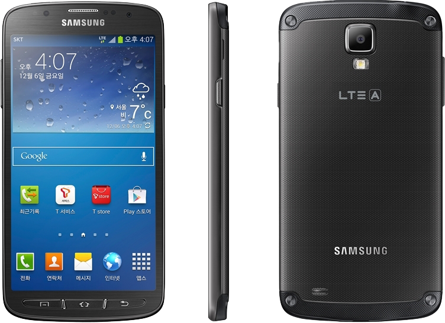

삼성 갤럭시 S4 Active
1. 외관

삼성전자가 2013년 3월에 공개한 갤럭시 S4의 파생 모델로, 2013년 6월에 공개한 안드로이드 스마트폰.
2. 사양
| 프로세서 | 퀄컴 스냅드래곤 800 MSM8974 SoC. Qualcomm Krait 400 MP4 2.3 GHz CPU, 퀄컴 Adreno 330 550 MHz GPU | ||
| 메모리 | 2 GB LPDDR3 SDRAM, 32 GB 내장 메모리, micro SDXC (최대 64 GB 지원) | ||
| 디스플레이 |
4.99인치 FHD(1920 x 1080) RGB 서브픽셀 방식의 TFT-LCD (441 ppi) 멀티터치 지원 정전식 터치 스크린 with 슈퍼 센서티브 터치, 고릴라 글래스 2 |
||
| 네트워크 | 기본 | LTE-2CA Cat.4, HSPA+ 42Mbps, HSDPA & HSUPA & UMTS, GSM & EDGE | Wi-Fi 802.11a/b/g/n/ac, 블루투스 4.0+LE, NFC, 적외선 LED, MHL 2.0 |
| - | - | ||
| 카메라 | 전면 200만 화소, 후면 1,300만 화소 AF 및 LED 플래시 | ||
| 배터리 | Li-lon 2600 mAh 착탈식 | ||
| 운영체제 | 안드로이드 4.2 (Jelly Bean) → 4.4 (KitKat) | ||
| 규격 | 71.3 x 139.7 x 9.1 mm, 147 g | ||
3. 상세
갤럭시 S4의 방수 방진 지원 파생 모델로, 갤럭시 XCOVER같이 생활 방수를 지원한다.
초기에는 갤럭시 S4 mini에서 조금 상향된 사양으로 추측되었으나, GL bench 사이트를 통해 미국 AT&T 내수용 버전 모델의 유출된 사양에 의하면 CPU 클럭,
디스플레이 사양, RAM 용량 등 주요 사양이 글로벌 갤럭시 S4 LTE와 사양이 비슷했다.
2013년 5월 20일에는 외관 사진도 공개되었다. 본가보다 더 예쁘다는 의견도 있도 더 투박해졌다는 의견도 있다. 그리고 사양도 구체적으로 유출되었다.
GT-I91XX/92XX 모델명을 할당받는 갤럭시 S II 라인업과 비슷한 사양이라고 볼 수 없을 정도로 갤럭시 S4와 판박이다.